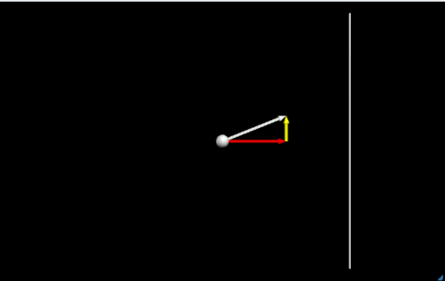

| Notes | Code and Results |
|---|---|
Creating a ball and an arrow (for its velocity vector) in vpython.We'll start by creating a simple ball, assigning it a velocity, and draw an arrow to show the vector.
Notice that:
|
The result should look like:
|
Making the Ball Move (Animation)As we all know, velocity is the change in distance over time. Considering only motion in the x direction (vx): $$ v_x = \dfrac{\Delta x}{\Delta t} $$ We can write the change in distance (Δx) as the difference in the old and new positions: $$ v_x = \dfrac{x_{new} - x_{old}}{\Delta t} $$ Therefore, if we know the velocity (v), the time step (Δt), and the starting position (xold), then we can solve this equation to find the new position (xnew). $$ x_{new} = x_{old} + v_x \cdot \Delta t \tag{1}$$ This could be read as: the new position is equal to the old position plus the change in position. |
|
Making the Ball Move (Animation): The Code
Notice that:
|
The result should look like this (but only move once):
|
Continuous Motion
To make the ball move continuously, we put the position update (and time sleep delay) into an infinite loop.
Notice that:
|
The result should look like this (but continues on forever):
|
Vertical Motion
Thus far, we have only seen horizontal motion. The ball has a component of velocity in the x-direction, but no velocity in any other direction.
The velocities in the 3 orthogonal directions are: $$ \begin{align} v_x &= 5 \\ v_y &= 0 \\ v_z &= 0 \end{align} $$So the velocity vector can be written as: $$ \vec{v} = \: <5, 0, 0> $$Vertical velocity component: vyLet's introduce a vertical component to velocity of 2 m/s. Therefore: $$ v_y = 2 $$ and, $$ \vec{v} = \: <5, 2, 0> $$ So, we need to change our program to account for the vertical component.
Notice that:
|
The result should look like this (but continues on forever):
|
Showing the Component Vectors (vx and vy )
We can draw two vectors to show the components of the main vector in the x and y directions.
Notice that:
|
The result should look like this:
You may notice that when the ball moves off the component vectors stay at the origin. It would be nice if you could alter the code so the component vectors move with the ball.
|
A Little StylingTo make things a little easer to see, we'll:
|
The code should appear more organized:
The result should be a little prettier:
|
Summing the Component Vectors
You can graphically add vectors by placing the vectors end-to-end. So where the last vector stops, the new one begins.
We'll do this to sum the component vectors by moving the vy vector to the end of the vx arrow.
Notice that:
|
The result should look like this:
|
Building a Wall
As the ball moves to the right, it seems to get smaller as the field of view zooms out. Let's make it static, but putting in a wall for the ball to bounce off of.
First we draw the wall as a simple, vertical line that's 20 m tall and 10 m from the origin (along the x-axis).
Notice that:
|
The result should look like this, but the ball will not bounce off the wall:
|
Bouncing off the Wall
The ball does not know that there is a wall. We need to write some code to let it know.
Since the wall is a vertical line 10 m away from the origin we can just say: If the ball hits the wall,
However, we have to be more specific about what the condition is when the ball hits the wall. So, we can recognise that: If the ball's x position is greater than or equal to 10 m,
So we combine these two logical statements to set up a bounce: If the ball's x position is greater than or equal to 10 m,
Codewise, this looks like:
Note that we also need to update the directions of the arrows (axes in this case) so that they keep track of the actual vectors:
|
The result should look like this:

|
Make Four Walls
Now, you should be able to make three more walls, such that the ball is bouncing around inside a box.
|
|